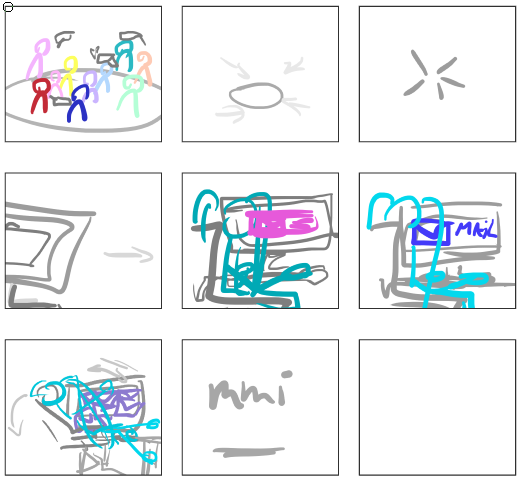
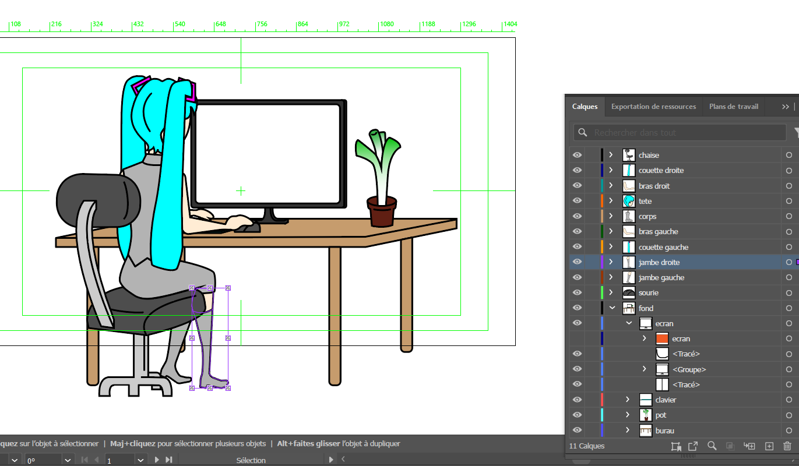
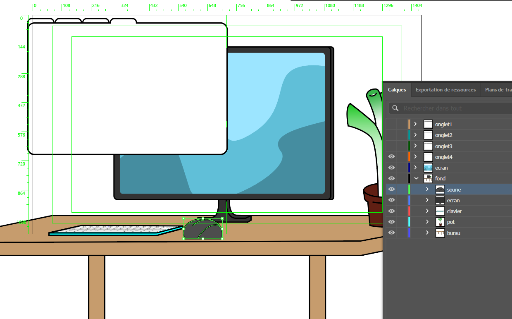
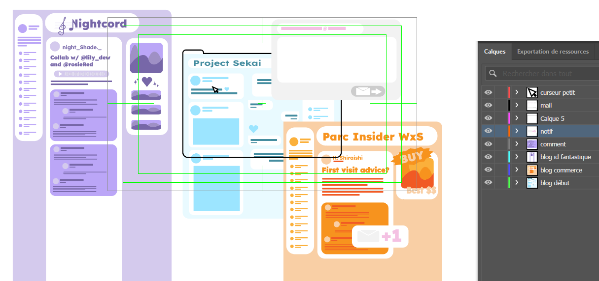
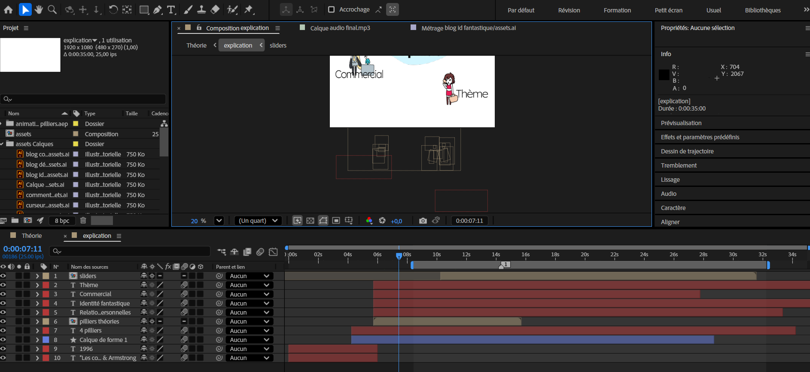
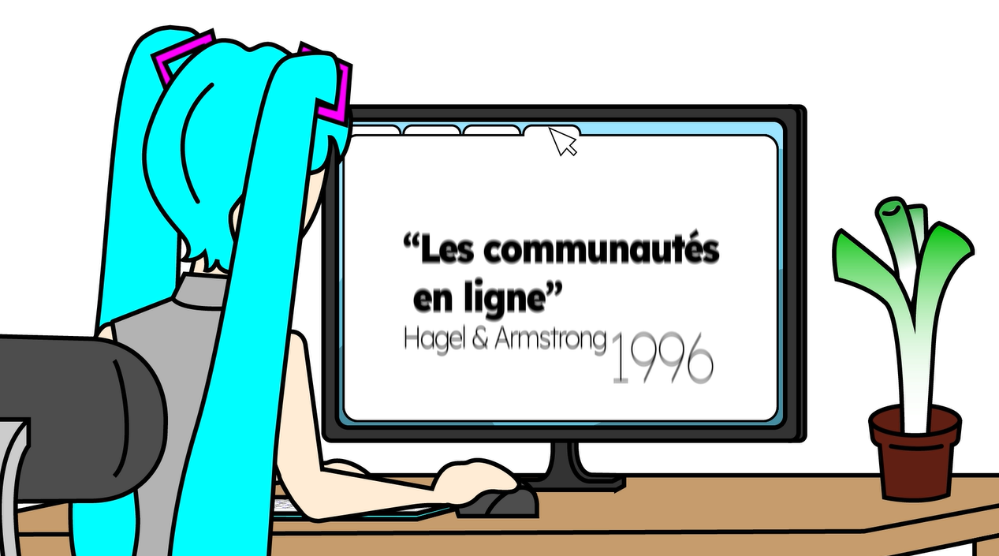

Les Communautes En Ligne ✦
Motion design explicatif de la théorie d'information et de communication des Communautés en Ligne de Hagel & Armstrong
Description du Projet
L'objectif de ce projet était de se renseigner sur les théorie d'information et de communication, et de créer un motion design explicatif pour présenter une de ces théories de manière claire et engageante. Nous avons choisi "Les Communautés en Ligne" de Hagel & Armstrong, pour son rapport proche avec notre formation et notre quotidien.
Méthodologie
Le projet a débuté par une phase de conception rigoureuse où le message a pris forme à travers l'écriture d'un script précis. Ce récit a ensuite été traduit visuellement par un storyboard détaillé, permettant de planifier chaque transition et intention de mouvement. Pour garantir une identité visuelle forte, un moodboard a guidé l'élaboration du style graphique qui sert de socle à toute la direction artistique du projet.
Une fois l'univers visuel défini, le travail s'est concentré sur la dimension sonore, moteur du rythme en motion design. L'enregistrement de la voix-off a permis de caler précisément les paroles sur un format d'une minute, tandis qu'un tableau de temps technique a été établi pour orchestrer la synchronisation. Ce document a servi de guide indispensable pour aligner chaque mot-clé avec les futures apparitions visuelles, assurant ainsi une fluidité narrative parfaite entre l'image et le son.
La production s'est ensuite poursuivie par la réalisation des assets sur Illustrator, où chaque personnage et décor a été illustré et vectorisé pour une qualité optimale. Ces éléments ont ensuite été importés dans After Effects pour l'animation proprement dite. Afin de mieux répartir la charge de travail et d'optimiser le flux de production, l'animation a été traitée par sections indépendantes, une approche modulaire qui permet de soigner chaque détail avant de lier les séquences par des transitions dynamiques.
Enfin, l'étape de post-production sur Premiere Pro a permis l'assemblage final de l'ensemble des séquences. C'est lors de cette phase que le calage sonore définitif, incluant la musique et les bruitages, a été ajusté pour renforcer l'impact émotionnel du message. Le projet s'est conclu par un travail méticuleux sur le sous-titrage, garantissant une accessibilité totale et une compréhension optimale du contenu, même lors d'une consultation sans son sur les réseaux sociaux.
Le script, moodboard, et storyboard
La conception du projet a débuté par la rédaction d'un script détaillé, suivi par la création d'un moodboard et d'un storyboard.



Les assets et scènes
Les éléments graphiques et les scènes animées ont été créés dans Illustrator et After Effects.



L'assemblage final
Le projet a été assemblé dans Premiere Pro pour finaliser l'animation et le calage sonore.


Les Résultats & Impact
Notre motion design a été bien accueilli par notre enseignant, qui à apprécié la clarté de l'explication et la qualité visuelle du projet. Nous avons reçu des retours positifs sur notre capacité à synthétiser une théorie complexe en un format accessible et engageant. Ce projet nous a permis de développer nos compétences en storytelling visuel, en animation, et en communication d'idées complexes de manière simple et efficace.